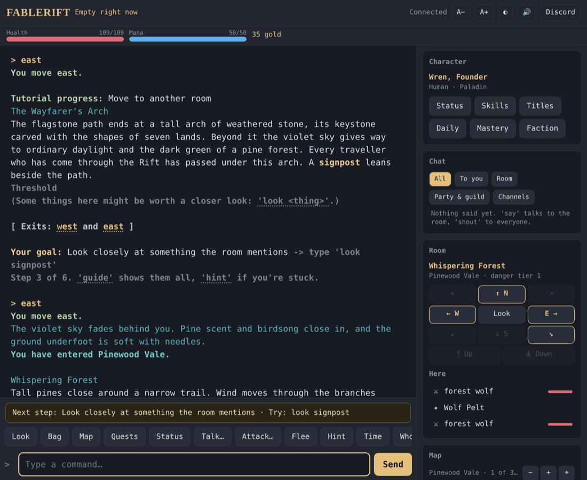
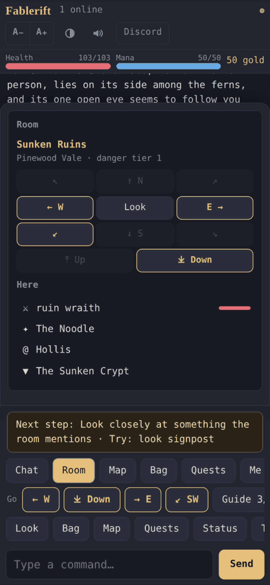
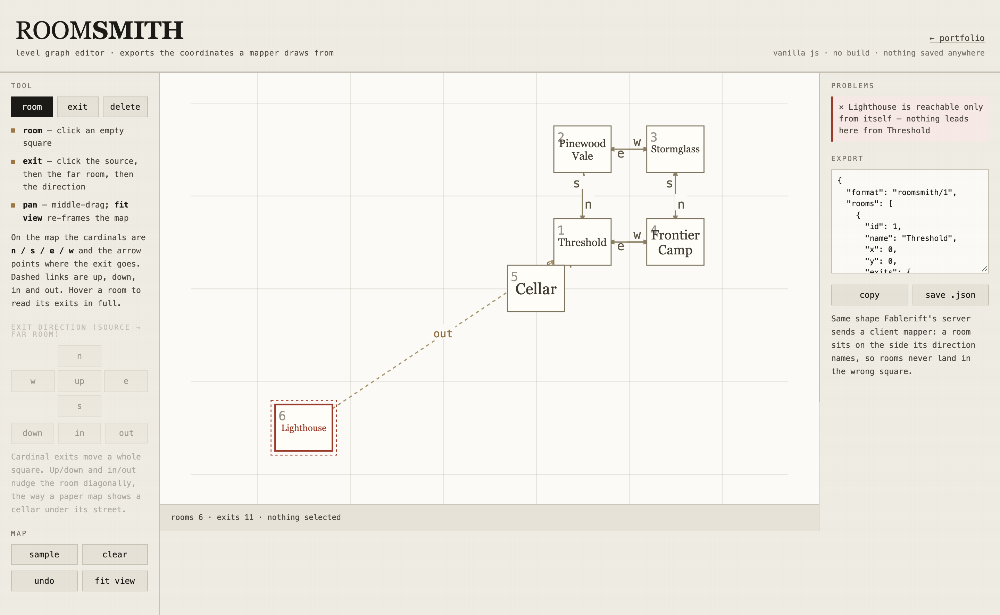
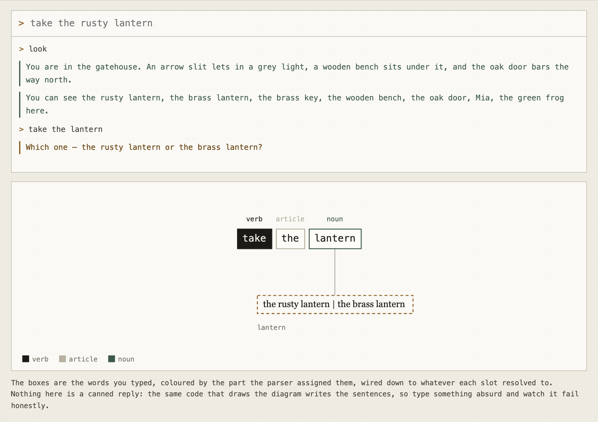

Enrico Sgiarovello
solo developer · c# / .net · unity
updated 17 nov 2026
I write the server, the clients, the launcher and the installer, then put a download page at the end of it. Fablerift is the proof: a MUD you can start playing in about a minute, in a browser, on the same world the Telnet players are standing in.
Things I made and finished
01
Fablerift — text RPG, browser + Telnet + SSH
A MUD, written from the socket up. Players type commands and walk a world that ten of us would call big: 243 hand-written rooms across ten regions, forest, coast, desert and frozen peak, with night and weather changing what is in them. Gathering, crafting, cooking, trading with whoever is standing nearby, dungeons with a party, and a five-chapter story that actually ends.
The part I am proudest of is not the game. It is that a Windows player, a Linux player and someone on a Mac with an ARM chip all get the same experience without hunting for a build: an MSI that needs no administrator password, an AppImage you chmod and run, a macOS bundle, every archive with a SHA-256 beside it. The launcher reads the latest GitHub release, asks before it installs, and keeps the two previous versions next to the new one so a bad update is a two-click rollback rather than a support thread.
Server owners get an embedded web admin panel and a hosting kit, because a MUD you cannot run yourself is only a game I own.
why the browser client is the real one
It is not a demo or a lite build. Browser players and Telnet players talk to the same server
process and meet in the same rooms — mud.fablerift.net:4000, or
:4443 with TLS, is the same world as the play link.



02
Roomsmith — level graph editor that exports my server's coordinates
Level design coursework taught me the boring half: a map that only exists in a text file is a map nobody can check. Roomsmith is a grid editor where you drop rooms, wire exits and watch the graph light up — and it exports the same coordinate shape Fablerift's server sends to a client's mapper, so a room lands on the side its direction names instead of being guessed from text.
It also catches the mistakes that cost a weekend to find in a real server: an exit that points at a room that is not there, two rooms landing on one square, an orphaned pocket nobody can walk into, and a loop whose arithmetic disagrees. Run east from Threshold to Stormglass, then claim north from Stormglass reaches Threshold, and it says so before you ship the map — four rooms wired north, east, south, west close fine and it stays quiet about them.

on the map above✕ Lighthouse is reachable only from itself — nothing leads here from Threshold
on a loop that cannot close✕ loop does not close: Threshold sits at 0,0 but Stormglass puts it at 1,-1 via north
03
Parser playground — the command grammar, isolated
People ask how a MUD understands get lamp or give it to mia. This is the interesting part pulled out of the server and rewritten small: synonyms, ambiguity resolution, multi-object lists, implicit it, and the message you get when two things could match. Every response comes from the parser in the page, not from a script, so you can say something absurd and watch it fail honestly.

an exchange, unscripted> take the lantern
Which one — the rusty lantern or the brass lantern?
> rusty
You take the rusty lantern.
> give it to mia
You give the rusty lantern to Mia.
Mia takes it, looks at it, and puts it out of sight.
Smaller things, and what is not here
- Photo randomizer & PowerPoint maker — C# utility. Folder of photos in, shuffled deck out. Written because doing it by hand twice was enough.
- Echo Hunter — Unity/C#, a sound-driven hunt. Prototype, private repo, no captures worth showing you yet.
- Anomalocaris — Unity, ShaderLab and URP visuals for a deep-sea horror pitch. Where my rendering practice happens. Private.
- Level design coursework — graded submissions, so they stay private. Happy to walk through blockout-to-playable files in an interview.
- daily
- C#, .NET 9
- engine
- Unity
- shaders
- ShaderLab / URP
- editor
- Rider
- releases
- GitHub Actions
- platforms
- Windows, Linux, macOS
- not here
- player counts, star totals, tools I have not used
Upstream
↗
One merged pull request to Mudlet: Fablerift in the "All games" catalog, taken into their development branch on 11 November 2026. Small change, real review process, and the fastest way for a MUD player to find a world to log into.